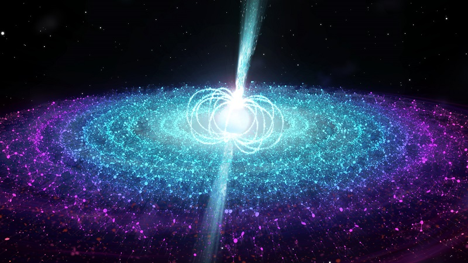
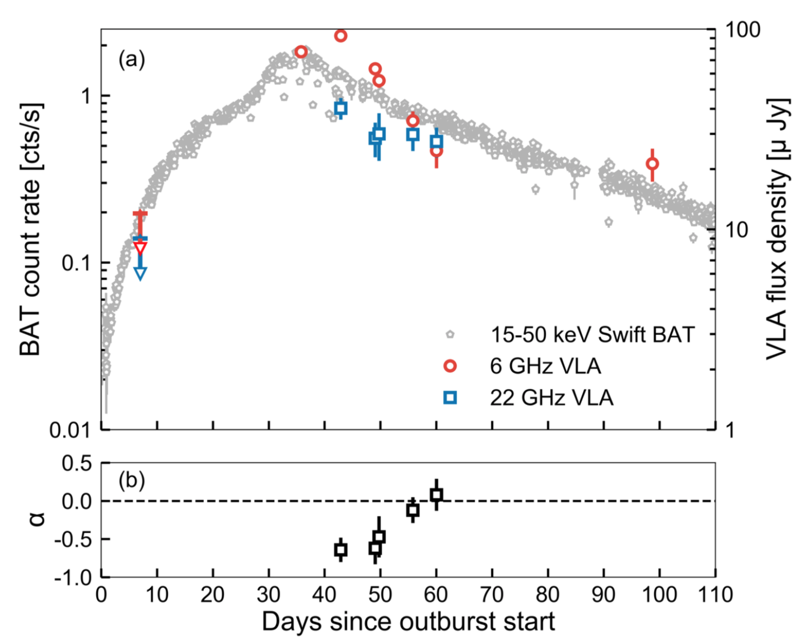
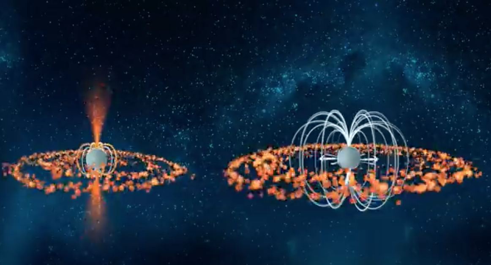

El jet de una estrella de neutrones altamente magnetisada. Crédito: ICRAR/University of Amsterdam
A toda acción hay una reacción. Este simple pero poderoso
principio rige todo lo que observamos en el Universo,
incluso cuando nos encontramos en los lugares más extremos
como la proximidad de una estrella de neutrones.
Esta remanente de lo que fue una estrella masiva, ¡contiene la
masa del Sol en sólo un diámetro de 20 kilómetros! En ocasiones,
esta estrella de neutrones orbita alrededor de otra estrella más masiva. Esta proximidad inevitablemente resulta en la interacción entre ellas, donde material es atrapado por la estrella de neutrones. La acumulación de tanto material lleva a eventos explosivos altamente energéticos; estos sistemas son conocidos como binarias de rayos-X.
Swift J0243+6124
El 29 de Septiembre de 2017, una nueva binaria de rayos-X fue descubierta por el monitor MAXI, situado en la Estación Espacial Internacional. En este sistema, ahora conocido como Swift J0243+6124, se observaron pulsaciones cada 9 segundos, confirmando así que una estrella de neutrones - pulsar - orbita una estrella mucho más masiva que ella. Cada vez que se acerca, el pulsar atrapa material que emana de su estrella compañera. Eventualmente, este material se avalanza súbitamente hacia el pulsar ocasionando la erupción observada por los telescopios de rayos-X.
Nuestro equipo en la Universidad de Amsterdam llevó a cabo un seguimiento en radio y rayos-X, lidereado por el estudiante de doctorado Jakob van den Eijnden, durante el transcurso de la erupción. Utilizamos uno de los radio telescopios más poderosos del mundo, el Very Large Array (VLA) en Nuevo Mexico, USA y el telescopio espacial de rayos-X, Swift Neil Geherls X-ray Satelite. Lo que observamos esta resumida en la siguiente gráfica.
Los colores rojos y azules trazan la cantidad de energía radiada en radio a diferentes frecuencias mientras que los puntos grises, trazan la energía en rayos-X.

a) Curva de luz de Swift J0243+6124 en rayos-X (gris) y en radio (rojo y azul). b) la evolución del jet en radio donde alpha=0 es consistente con un jet. Crédito: van den Eijnden et al. 2018, Nature
Este tipo de curvas de luz nos permiten observar la evolución de la energía radiada por el sistema. Después de no detectar en radio al sistema en nuestras primeras imágenes (día 8), tomamos una imágen nuevamente casi un mes después durante el máximo de la erupción, ¡encontramos finalmente al sistema en radio!
No sólo eso, si no sus propiedades revelan la formación de un jet - partículas altamente colimadas viajando a altas velocidades - el cual continuó durante el resto de la erupción. Es aquí donde resaltamos la novedad de estas observaciones.
Por décadas, la existencia de estos jets en estrellas de neutrones altamente magnetisadas se creían imposibles. Esto se debe a que el material debe aproximarse a la estrella de neutrones para poder ser lanzado fuera del sistema. Sin embargo, el gran campo magnético actúa como barrera y previene que el material se acerque. Como consecuencia, inhibe la formación de jets. No sólo del punto de vista teórico este sistema no debería de producir un jet, sino que observacionalmente no existía evidencia de un jet en sistemas similares.

El gran campo magnético de algunas estrellas de neutrones (derecha) debería prohibir la formación de jet. Crédito: ICRAR/Universidad de Amsterdam
Y ahora que sigue?
La detección de esta sistema abre un nuevo campo para estudiar como se forman jets en ambientes magnéticos tan extremos. A su vez, confirma que los jets se forman independientemente de las condiciones del objeto compacto, particularmente su campo magnético. Una de las cosas que hay que hacer es corroborar si SwJ023 es único o uno más de la población. Para eso, requerimos llevar a cabo un estudio más general de estos sistemas para poder dar más generales de la población.
Uno de los objetivos a largo plazo es utilizar a sistemas como SwJ0123 para estudiar las enigmáticas fuentes ultra-luminosas de rayos-X (ULXs por sus siglas en inglés). Estas se creen son estrellas de neutrones aque estan acumulando persistentemente una cantidad enorme de material, similar a SwJ0123 en el maximo de la erupcion (que solo duro un par de semanas). Dado que estos ULXs se encuentran en galaxias lejanas, haber encontrado sistemas análogos en la Vía Láctea ayudará a resolver el misterio.
Explicación sobre el jet imposible (en inglés solamente). Crédito: ICRAR/Universidad de Amsterdam